Также столешница, обладающая меламиновым покрытием, хорошо переносит механические воздействия (царапины
или удары), при контакте с водой не разрушается, устойчиво переносит бытовые химические вещества
и не выгорает под воздействием ультрафиолета.
 

Эргономика — ключ к успеху современного человека
Cтильная столешница , выполненной из экологически безопасного материала (ДСП), и усиленной стальной рамы
не составит труда разместить на поверхности инновационного стола большое количество крупногабаритной
техники: стол выдерживает нагрузку до 80 кг.
Также столешница, обладающая меламиновым покрытием, хорошо переносит механические воздействия (царапины
или удары), при контакте с водой не разрушается, устойчиво переносит бытовые химические вещества
и не выгорает под воздействием ультрафиолета.